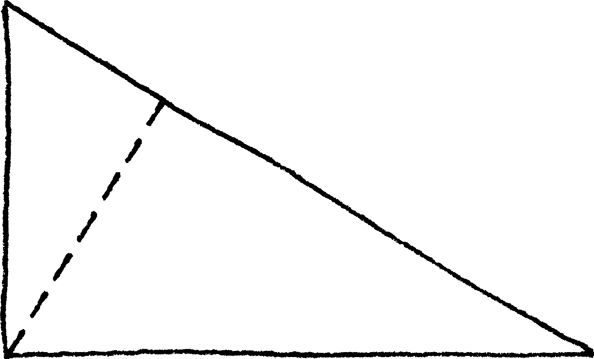
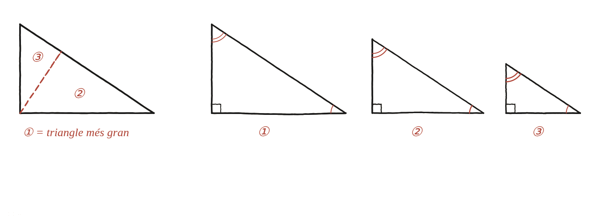

Demostra que si tallem un triangle rectangle en dos de més petits amb l'altura sobre la hipotenusa, tots dos han de ser semblants al triangle original.

Semblant vol dir: mateixos angles
Per demostrar que dues figures són semblants —mateixa forma, mida diferent— no cal mesurar cap costat: n'hi ha prou de comprovar que tenen els mateixos angles. En triangles, encara es pot simplificar més: en un triangle rectangle, conèixer un sol angle agut ja determina l'altre (els tres angles sumen 180° i un ja val 90°, així que els altres dos sumen 90°, i en queda un de determinat un cop es coneix l'altre). Per tant, per veure que dos triangles rectangles són semblants n'hi ha prou de trobar-los un angle agut en comú.
Separar les tres peces
L'altura traçada des de l'angle recte del triangle gran fins a la hipotenusa el divideix en dos triangles més petits. Compte amb el detall clau de la figura: als tres triangles hi ha un angle marcat amb un arc i un altre amb dos arcs. Un arc i dos arcs són coses diferents —tots els angles marcats amb un arc valen igual entre ells, i tots els marcats amb dos arcs valen igual entre ells, però no cal que un arc i dos arcs coincideixin.

Tancar-ho: cada peça comparteix un angle amb el gran
Cada un dels dos triangles petits té el seu propi angle recte —l'altura els n'ha creat un de nou a cadascun. I, a més, cadascun comparteix un dels angles aguts amb el triangle gran original: el triangle de sota comparteix l'angle agut de la dreta; el de dalt, l'angle agut de dalt. Amb l'angle recte (compartit pels tres) més un angle agut en comú amb el gran, cadascun dels dos triangles petits ja compleix la condició de semblança amb el triangle ①: tots tres triangles són semblants entre si.
Un resultat amb una segona vida
Aquest fet no és només curiós per si mateix: és exactament la base d'una demostració clàssica del teorema de Pitàgores. De la semblança en surt que a²=c·p i b²=c·q, on a i b són els catets del triangle gran, c la seva hipotenusa, i p, q els dos trossos en què l'altura talla la hipotenusa. Sumant les dues igualtats: a²+b²=c·p+c·q=c·(p+q)=c·c=c².
Sí: l'altura des de l'angle recte fins a la hipotenusa crea dos triangles que comparteixen, cadascun, l'angle recte i un angle agut amb el triangle original —condició suficient de semblança. Aquest fet és, a més, la base d'una demostració del teorema de Pitàgores: a²=c·p, b²=c·q, i sumant-les, a²+b²=c².
Comprovació
Triangle 3-4-5: l'altura sobre la hipotenusa fa 2,4 i la talla en trossos de 1,8 i 3,2. Comprovant la proporció dels catets als tres triangles: 1,8/2,4 = 0,75 i 2,4/3,2 = 0,75, coincidint amb 3/4 = 0,75 del triangle gran.